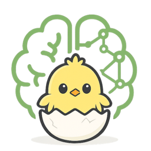

Piyik Brain
Apa yang ingin kamu ingat hari ini?
Terbaru
Chat
Catatan
Catatan Baru
Checklist
Lirik
Detail Lagu
Catatan Terkait
Rekomendasi Catatan
Pengaturan
Data
Tampilan
Privasi
App mengirim data pemakaian anonim (ID acak, versi app, jumlah pakai fitur, dan catatan error) untuk membantu perbaikan. Isi catatanmu tidak pernah ikut terkirim. Bisa dimatikan kapan saja.
Tentang
Tentang
Piyik Brain
Versi 1.0.0 | July 2026
Piyik Brain lahir dari kebiasaan sederhana: menulis. Sering kali jawaban atas masalah hari ini sebenarnya sudah pernah kita tulis sendiri, jauh di masa lalu. Di sinilah Piyik Brain hadir — ruang tenang untuk menyimpan dan mengingat kembali pengalaman, ide, dan pelajaran yang pernah kita miliki, agar catatan tak sekadar jadi arsip.
Versi 1.0 adalah langkah pertama menuju itu. Terima kasih telah menggunakan Piyik Brain.
Prinsip
Info Teknis
Tempat berdialog dengan pikiranmu sendiri.
Dibuat oleh M. Novi Irkhami — Angon Rasa